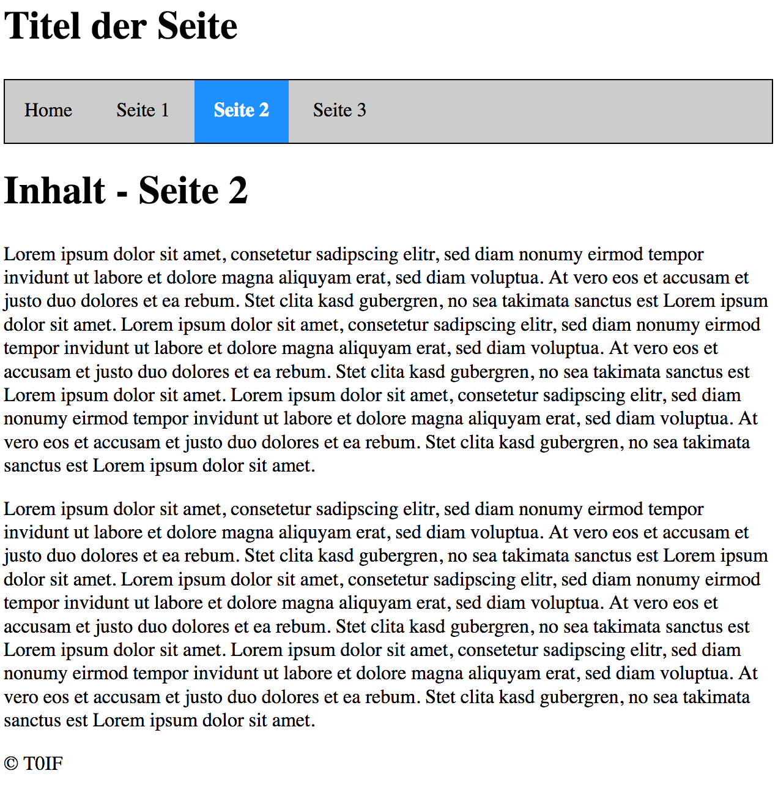
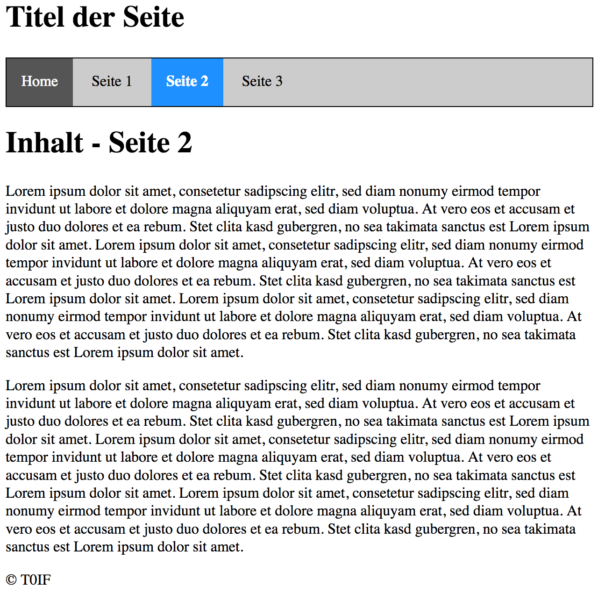

Task 61
This task is about designing a menu bar.
-
Open the folder
../solutions/task61. This contains four HTML pages and an external CSS style.
-
Complete the CSS style so that the navigation bar ends up looking like the one as you can see below.
Use the following link to do this:
https://www.w3schools.com/css/css_navbar.asp
Note the following points here:
-
Already visited links look the same as links that have not been visited yet.
-
The current page is highlighted by a blue background and a white white, bold font.
-
It should be possible to click above or below the font of the link and still open the corresponding page.
-
If the mouse cursor hovers over a link, the link should have a dark gray background background and a white font color.

Fig. 1 - Navigation bar of page 2

Fig. 2 - Navigation bar of page 2 with cursor over home link